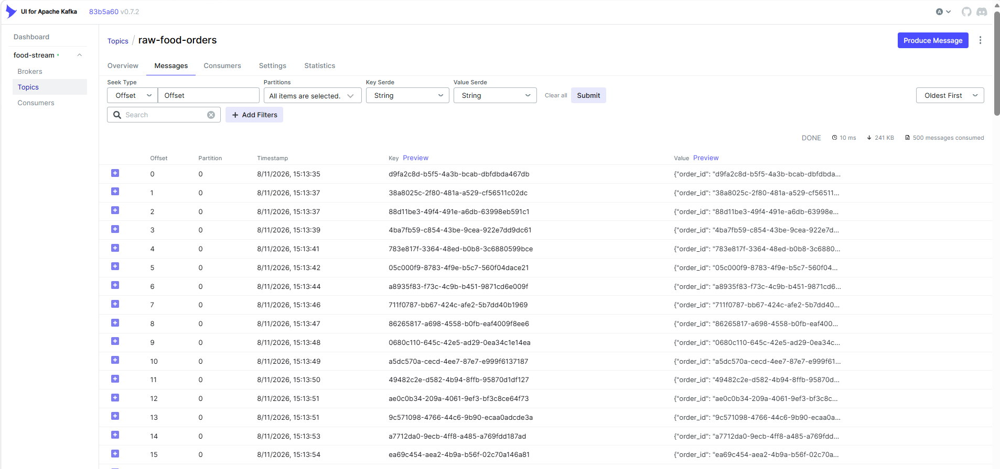
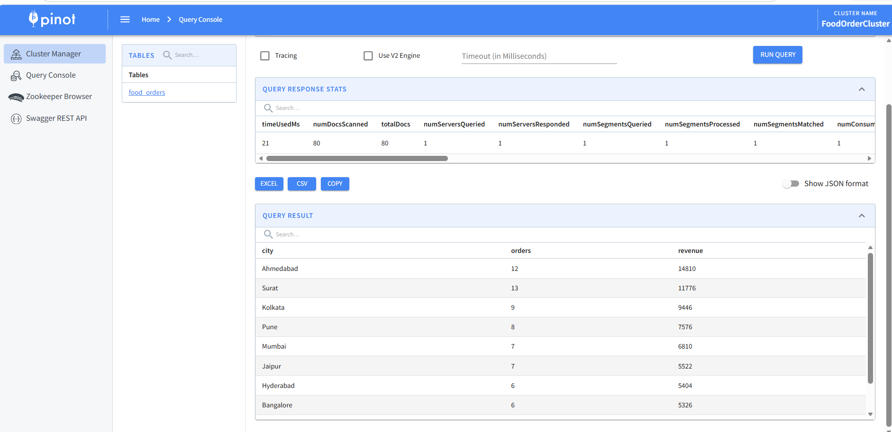

Overview: An end-to-end real-time data engineering pipeline that processes food delivery orders from data generation to sub-second analytical querying. Orchestrated entirely via Docker Compose.
Technology Stack: Python, Apache Kafka, PySpark (Structured Streaming), Apache Pinot, Docker.
Python Producer → Kafka (raw topic) → PySpark Processor → Kafka (processed topic) → Apache Pinot
A Python script generates synthetic, realistic food order data (JSON format) using the Faker library and publishes these events to an Apache Kafka topic named raw-food-orders.
The screenshot below shows live JSON messages successfully streaming into the Kafka topic:

A PySpark Structured Streaming job continuously reads the raw data from Kafka in micro-batches. It cleans the data and computes new business metrics in real-time, such as categorizing the order value and determining if it was placed during peak hours. The enriched data is then published back to a second Kafka topic named processed-food-orders.
Example of the PySpark transformation logic:
# Read from raw Kafka topic, enrich data, and write to processed Kafka topic
enriched_df = parsed_df \
.withColumn("hour_of_day", hour(from_unixtime(col("timestamp") / 1000))) \
.withColumn("is_peak_hour",
when(col("hour_of_day").between(12, 14) | col("hour_of_day").between(19, 22), lit(1))
.otherwise(lit(0))) \
.withColumn("order_value_category",
when(col("price") < 200, lit("Budget"))
.when(col("price") < 600, lit("Mid-Range"))
.otherwise(lit("Premium")))
Apache Pinot directly subscribes to the processed-food-orders Kafka topic via a REALTIME table configuration. This enables immediate, sub-second SQL aggregations (like revenue by city or orders by cuisine) on the live data stream without requiring an intermediate database load.
The screenshot below demonstrates a live SQL query executed against the Pinot REALTIME table, returning aggregated revenue results in milliseconds:

The entire pipeline and all associated services can be launched with a single Docker command:
docker-compose up -d
Thank You